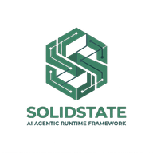

Scale-Focused AI Systems Leader & Technology Executive.
Proven executive track record directing high-compliance engineering squads, payment platforms, and machine learning data products. Fusing architectural rigor with venture-scale execution to deploy governed LLM planes and retrieval systems.
Production System Architectures
A summary of scalable blueprints designed and engineered to align LLM behaviors with enterprise-grade compliance and extreme multi-tenant performance.
Governed Enterprise AI Platform
A secure, LLM-agnostic gateway proxy providing real-time compliance enforcement, rate limiting, and structured auditing across multi-tenant teams.
Key Capabilities & Controls
- Semantic Caching: Pre-evaluates embeddings to serve repeat queries instantly (<15ms latency).
- PII & Sensitive Data Redaction: Prevents intellectual property leakage to external APIs.
- Model Routing & Rate Limits: Automated fallback routing and precise cost attribution.
- Alignment Auditing: Logs complete token histories and citation boundaries.
Advanced Multi-Tenant RAG Graph
Fusing semantic dense vector embeddings with sparse BM25 indices and knowledge graphs under document-level access-control filters.
Key Capabilities & Controls
- RBAC-Aware Retrieval: Filters unauthorized chunks *before* LLM insertion.
- Reciprocal Rank Fusion (RRF): Blends deep vectors with keyword-exact queries.
- Knowledge GraphRAG: Resolves complex, multi-document synthesis queries.
- Hierarchical Context Parsing: Preserves document outline hierarchies.
Core Products
Scalable platforms and open-source runtimes built to align complex AI execution with enterprise security and predictability.

SolidState
An open-source, state-oriented execution engine for predictable and bounded AI agent teams.
Building a Minimal Agent Runtime
A non-blocking ReAct loop, lightweight state graph orchestration, and symbolic pipeline chaining.
The Command Center: Tool Registries
Zero-boilerplate schema synthesis using reflection and metaprogramming, and type-safe command execution.
Architecture & Core Pillars
The technical documentation will include declarative YAML schema specifications, state machine validation workflows, tool sandbox API definitions, and KYC onboarding tutorials.
Source & Releases
The SolidState engine will be published under an open-source license. The repository will contain the Python core runtime, CLI tools, and pre-built reference templates for KYC validation.
Research & Patents
Academic papers and system preprints focusing on the intersection of data engineering, retrieval science, and enterprise AI compliance.
AI Systems Blog
Deep-dives into actual architectural challenges, production post-mortems, and scalable patterns for governing data products.
About Haranadh Gavara
Bridging research depth, engineering execution, and architectural judgment to build reliable, outcome-oriented AI systems at scale.
Core Focus & Philosophy
I work at the intersection of AI systems, enterprise architecture, data products, and governance. My focus is on helping organizations move from AI experimentation to reliable, production-grade adoption. I am particularly interested in the systems layer behind AI: how data is designed, how meaning is preserved, how ownership is assigned, how evidence is controlled, and how technology choices translate into measurable business outcomes.
In recent years, my work has focused on building AI systems, data products, and governance-led operating models that help organizations scale technology responsibly. I am especially interested in trustworthy, outcome-oriented systems built through better data design, semantics, ownership, operational clarity, and strong enterprise architecture.
"AI will not become enterprise capability through models alone. It needs architecture, governance, data discipline, product thinking, and operating models that make intelligence reliable at scale."
Having held SVP, VP, Acting CTO, and Head of Product roles across startup environments, I specialize in building and leading engineering teams through critical growth phases. My work has supported successful venture raises of $12M at one company and $6M at another by translating product and technology capabilities into tangible enterprise value.
Credentials & Education
M.S. (Research) in Machine Learning
Indian Institute of Technology (IIT), Madras
PGCBM (Business Management)
Indian Institute of Management (IIM), Tiruchirappalli
Licenses & Certifications
AWS Certified Solutions Architect – Professional
Amazon Web Services (AWS)
TOGAF® 9 Certified
The Open Group
Credential ID: 153182
Project Management Professional (PMP)®
Project Management Institute
Google Cloud Certified Professional Data Engineer
Credential ID: LPbGSC
LinkedIn Newsletter
I write the newsletter AI Systems & Outcomes, sharing operational perspectives on AI systems, data products, governance-led operating models, enterprise architecture, and the concrete business outcomes they enable.
Subscribe to NewsletterProfessional Experience
Enterprise Architect
Datavid • Full-time
Reading, United Kingdom (Remote)
Directing high-compliance enterprise data and AI architecture strategies. Fusing original research with engineering realities to design governed multi-tenant platforms and auditable data products for global enterprises.
Enterprise Architect
Freelance
United Kingdom
Advised medium-to-large scale companies on scalable data lineage architectures, technology choices, model alignments, and governance frameworks mapping technical strategies to measurable business outcomes.
Head of Product Development (Setara) Head of Product
Indepay | Setara Networks Worldwide • Full-time
Singapore
Challenged and changed payment processing paradigms. Led the architecture, technical design, and execution of a secure, high-throughput OpenAPI payment integration platform.
Head of Product Development (Indepay) Head of Product
Indepay | Setara Networks Worldwide
Singapore
Oversaw complete product strategy and engineering execution, unifying data engineering, payment operations, and enterprise architecture blueprints.
VP Technology VP Role
Tinvio • Full-time
Singapore
Directed all technology, infrastructure, and engineering decisions. Built and led agile software teams in designing a highly responsive, multi-tenant B2B merchant software platform through rapid scaling phases.
SVP Engineering, Data Science & Acting CTO SVP / Acting CTO
UangTeman.com • Full-time
Singapore
Managed engineering, DevOps, and ML/AI teams. Architected robust and compliant credit risk modeling engines, credit scorecard frameworks, fraud analytics platforms, and automated credit assessment pipelines.
VP Data Science VP Role
UangTeman.com
Singapore
Built the core ML/AI data products from scratch, resulting in a granted patent in Singapore for machine learning credit scoring frameworks. Successfully supported corporate scaling and funding rounds of $12M and $6M.
Sr. Analyst -- App prog
BA Continuum India Pvt Ltd (Bank of America)
Greater Hyderabad Area, India
Designed and engineered highly scalable and secure banking web applications, focusing on low-latency transactional throughput and reliable database integration.
Senior Software Engineer
Oracle Corporation
Greater Hyderabad Area, India
Core developer on the Oracle Utilities Framework. Focused on building highly scalable enterprise backend modules, data architecture mappings, and framework services.
Founder Founder
PH Technologies Pvt Ltd
Greater Hyderabad Area, India
Founded and managed a consulting firm specializing in custom Software Development, Data Science, and Machine Learning services. Architected open source solutions in Azure and AWS for e-commerce, FinTech, and B2B platforms.
MTS 2
NetApp
Bengaluru, India
Conducted advanced research and application of machine learning, cloud storage virtualization, and semantic indexing in the Advanced Technology Group.
Research Assistant
Indian Institute of Technology, Madras
Chennai, India
Executed academic research on pattern recognition, statistical algorithms, and deep structured data classification engines.
MTS 2
NetApp
Bengaluru, India
Researched and built algorithmic prototypes focusing on machine learning and pattern recognition inside storage intelligence arrays as part of the Advanced Technology Group.
Research Project Associate
IITM (ICSR)
Chennai, India
Worked on soft computing methodologies and parallel neural network structures for advanced cryptanalysis on a project sponsored by DRDO SAG Labs.
Connect & Collaborate
I am always interested in discussing complex AI architecture systems, hybrid retrieval paradigms, or speaking opportunities. Feel free to copy my direct email below or reach out via professional networks.